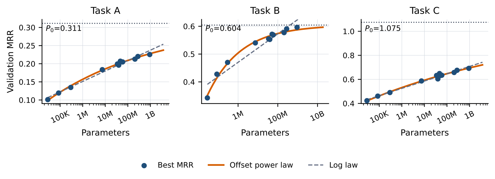
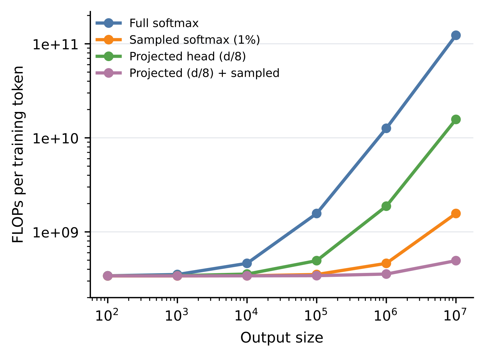
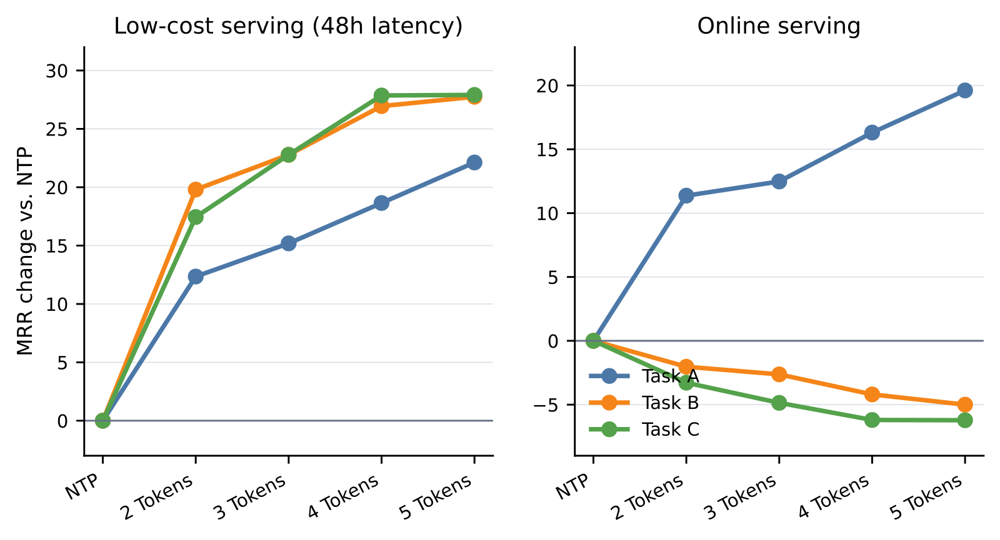
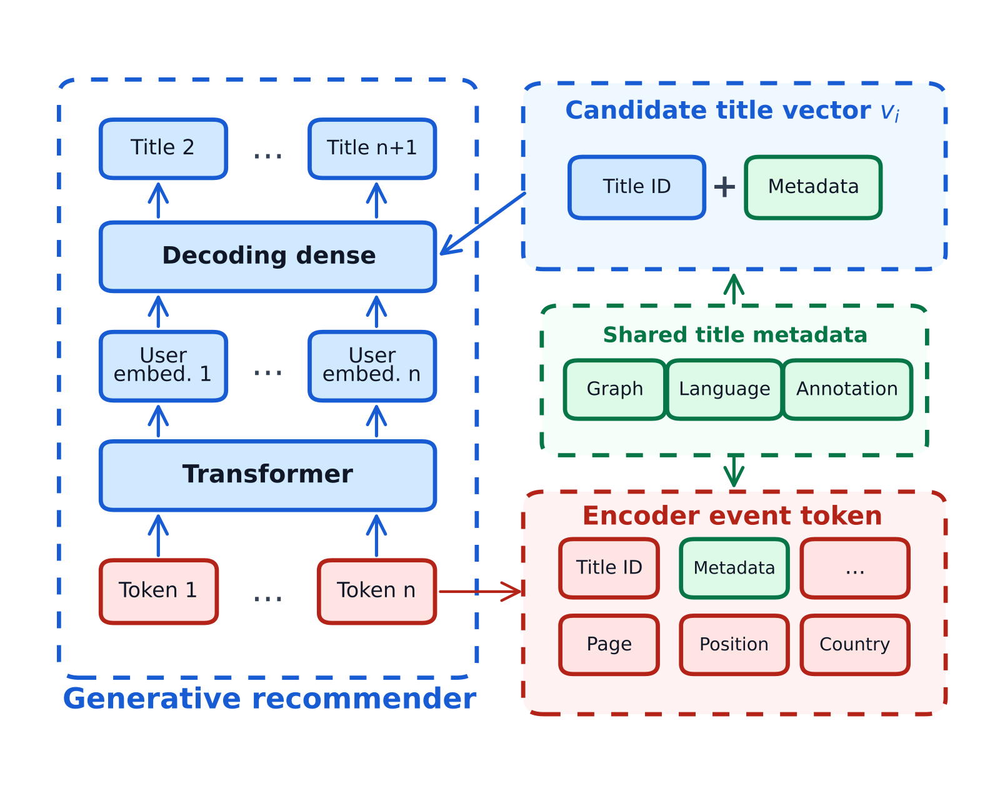
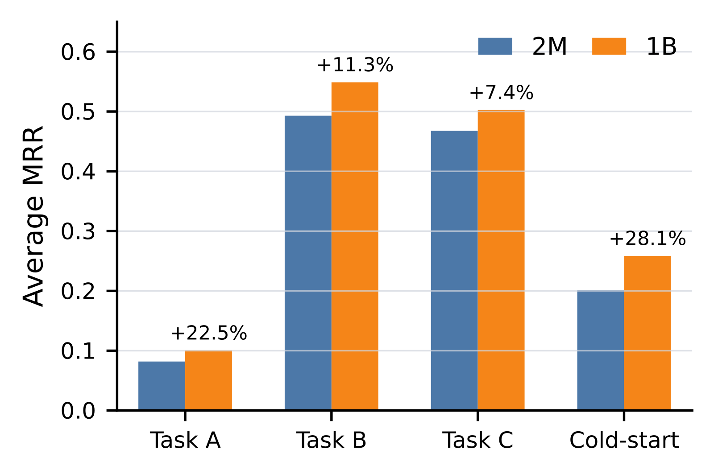

目录 · 9 节
1它到底在解决什么问题？2放大模型有没有用：按任务拟合的 scaling law3让 1B 模型能反复重训：采样 softmax 和投影解码头4缓存服务下标签会过期：多 token 预测（MTP）5冷启动：语义塔加 ID 遮盖6影子流量结果7我认为它的局限8一个推荐团队可以怎么试9结论和评价做工业生成式推荐、正在评估“要不要把模型做大”的团队值得读。这是 Netflix 的一篇经验报告，不是新架构论文：他们把一个生成式推荐模型的骨干从 2M 参数放大到 1B，发现收益因任务而异，于是用带上限的 scaling law 判断哪类任务还值得加参数，再配上三项工程改动，让大模型能反复重训、对得上缓存服务、能给新片打分。在覆盖 100 万用户、为期一周的影子流量评估里，1B 模型在长期口味类任务（Task A）上 MRR 相对提升 22.5%，在冷启动新片上提升 28.1%，在时间驱动类任务（Task C）上只提升 7.4%。我认为这篇最有用的是两条经验：scaling law 可以拿来做“该不该继续加参数”的诊断，以及缓存服务会让 next-token 标签过期。但影子流量结果把放大模型和三项改动打包在一起比较，不能当成“放大带来 22.5%”的证据。
它到底在解决什么问题？
Netflix 这套模型把每个用户事件的动作、观看上下文和片子元数据压进一个 token，训练时预测之后的事件。这类模型的吸引力在于一个骨干可以同时服务召回、排序特征、用户 embedding、冷启动打分等多个下游任务。但在生产里，“预训练指标变好”不会自动变成“下游推荐变好”。作者归纳了四个卡点：任务本身还有没有提升空间；数万亿行为 token 要按固定周期反复重训，训练成本能不能扛住；线上为了省钱常把结果缓存起来，训练目标和实际服务时刻对不对得上；新上线的片子还没有可靠的协同 ID embedding，模型能不能给它打分。
用一个示意场景贯穿全文：某用户昨晚看了一部犯罪剧的第 3 集。推荐系统在夜里算好他的推荐结果并缓存，第二天晚上他打开首页时才用上这份缓存。按 next-token 训练，模型学到的“正确答案”是第 4 集，可到了服务时刻，他很可能已经在通勤路上看完了第 4 集，真正该推的是第 5 集，或者同一题材的另一部剧。同时，平台当天刚上线一部新剧，几乎没有观看记录。这篇论文的几项改动，分别对应这个场景里的不同问题。
放大模型有没有用：按任务拟合的 scaling law
作者先把 Netflix 的推荐场景粗分成三类任务，避免暴露内部页面名称：
| 任务 | 可预测性 | 含义 |
|---|---|---|
| Task A | 低 | 长期口味，正样本稀疏，目标可能超出当前会话 |
| Task B | 中 | 短期参与，近期行为和会话意图更有用 |
| Task C | 高 | 由上线时间、片库可用性、大盘热度驱动 |
实验设置是按时间切分：用户历史截止在某个时间点之前，标签取之后的真实行为。不同规模的模型共用同样的训练数据、评估样本、物品词表、embedding 维度和解码设置，只改骨干大小，参数量不计 embedding 和解码层。指标用 MRR，因为它连续、上限为 1，适合拟合“逼近天花板”的曲线。

拟合形式是 ，其中 是拟合出的饱和水平。三类任务的结果很不一样：Task A 的 为 0.311，而 1B 规模时 MRR 才 0.22 左右，离上限还远；Task B 的 为 0.604，已经接近这个规模区间里观察到的最好值；Task C 的 为 1.075，超过了 MRR 的理论上限 1，作者承认超出部分是估计误差。和 HSTU 用过的对数线性拟合相比，带上限的形式在三类任务上的拟合误差都更低：
| 任务 | 带上限幂律 RMSE（×10⁻³） | 对数线性 RMSE（×10⁻³） |
|---|---|---|
| Task A | 2.80 | 5.43 |
| Task B | 8.16 | 21.34 |
| Task C | 9.33 | 10.97 |
这说明 “加参数有没有用”要按任务分开问。对 Task B 这类已经贴近上限的任务，继续放大骨干的回报会很小，更该改的是训练目标或服务链路；对 Task A 这类离上限还远、又对产品重要的任务，放大仍有空间。作者也强调， 是在当前数据、目标和评估分布下的诊断量，不代表任务本身的价值。
让 1B 模型能反复重训：采样 softmax 和投影解码头
推荐模型和语言模型的一个区别是要频繁重训，用户口味、季节、片库每天都在变。作者的预训练数据每个周期有 2 万亿行为 token。在这个量级下，直接对所有候选物品打分的输出层会占掉训练成本的一大块：候选物品越多，输出层的矩阵乘越大，而骨干的计算量不变。

他们用了两个简单的办法。第一是采样 softmax：训练时只对正样本和均匀随机抽取的 1% 负样本计算 logit，抽到目标本身就剔除，没有做 LogQ 校正。第二是共享投影解码头：在算物品 logit 之前，把骨干的隐状态从 d 维降到 d/8 维，生产中是从 4096 维降到 512 维。这样骨干的容量不变，只压缩和片库大小挂钩的那部分计算。
举个例子，输出词表为 10⁶ 时，示意配置下完整解码每个 token 需要 1.26×10¹⁰ FLOPs，两项一起用后是 3.56×10⁸ FLOPs，作者算出约 35.5 倍的降低；词表到 10⁷ 时约 249 倍。要注意这是输出层的解析估算，不是端到端训练吞吐的实测。作者还提到一个小到大的实验漏斗：改动先在小骨干和缩小的测试集上验证，过了才进 1B 的训练。这本身不是方法贡献，但对控制试错成本很实际。
缓存服务下标签会过期：多 token 预测（MTP）
放到示意场景里看，缓存结果在用户看完第 4 集之后才被用上，next-token 训练却把全部概率压在第 4 集上。作者用回放评估量化了这件事：把服务延迟逐步拉长，Task A 的 MRR 最多只变化 4%，Task B 在 24 小时延迟时下降 31%、48 小时下降 41%，Task C 在 48 小时下降 18%。这说明短期任务对缓存延迟最敏感，长期口味任务对过期的表示更宽容。
第二个问题是很多推荐目标本来就是集合。用户接下来可能既看 A 也看 B，先 A 后 B 和先 B 后 A 都合理，但 next-token 训练只认观察到的那一个顺序，会惩罚其他同样合理的未来。
MTP 的做法是给每个上下文构造一个带权重的未来目标集合，只放高价值的未来行为，按时间做指数衰减，半衰期 1 小时：
可以编码观看时长、完播、新鲜度等收益信号， 取 1 小时。关键是 MTP 只改监督目标：服务时模型仍然只做一次打分，不需要逐个生成，也不多调用模型。

结果分两种服务方式看。在 48 小时缓存服务下，5 个 token 的窗口最好，Task A、B、C 的 MRR 相对提升分别为 22.1%、27.8%、27.9%。在 p95 延迟低于 1 秒的在线服务下，Task A 用 5 个 token 提升 19.6%，但 Task B 和 Task C 随窗口变大而下降。这说明 MTP 适合缓存服务和集合型目标，对严格在线的短期任务要谨慎：在线时下一个事件仍是很强的目标，把目标集合放宽，会抹掉 Task B、C 最依赖的时间敏感信息。
冷启动：语义塔加 ID 遮盖
新片没有观看记录，协同 ID embedding 学不出来，模型再大也帮不上。作者的做法是保留成熟片子的 ID embedding，同时给每部片子加一个多模态语义表示，来源有三种：在片子知识图谱上做消息传递得到的图特征，用 LLM2Vec 生成的文本 embedding，以及人工标注特征。

给一部片子打分要经过三步：先用一个映射 把图、文本、标注三种特征合成语义表示 ；再用一个学出来的函数 把 ID 侧 embedding 和 合成候选片子向量 ；最后把 Transformer 输出的用户表示 经过投影 ，和 做内积得到分数 。论文没有说 是相加、拼接后投影还是别的网络。词表里的片子，ID 侧用自己的 ID embedding；词表外的新片统一用一个学出来的 OOV embedding，片子特有的信息只能来自 。为了让解码器学会在 ID 缺失时依赖语义表示，预训练时按线上实测的冷启动比例，随机把输入端或输出端的协同 embedding 换成 OOV embedding。示意场景里那部当天上线的新剧，就走这条路径：没有 ID 证据，靠题材、简介和人工标注被打分。页面、位置、国家这类上下文只影响用户表示，不进候选片子向量，避免把一时的服务上下文混进片子本身的表示里。
影子流量结果
最终对比是生产系统层面的，不是只改规模的消融。两边的区别如下：
| 维度 | 基线 | 放大后的模型 |
|---|---|---|
| 骨干 | 2M 参数 | 1B 参数 |
| 解码 | 完整 softmax | 采样 softmax + 投影头 |
| 训练目标 | NTP | MTP |
| 冷启动 | 只有 ID embedding | 语义塔 + ID 遮盖 |

评估覆盖 100 万用户、一周，下游系统按生产链路调用模型，但结果不影响用户看到的页面，再用同期的真实行为做标签。1B 模型在四个切片上都更好：Task A 提升 22.5%，Task B 提升 11.3%，Task C 提升 7.4%，冷启动新片提升 28.1%。作者另外提到，模型接入下游后在多个线上 A/B 实验中有正向结果，但没有给任何数字。这说明这套组合在 Netflix 的多个下游场景都能用，但每一项改动各贡献了多少，这组实验回答不了。
我认为它的局限
第一，影子流量对比混入了四个变量。骨干、解码、训练目标、冷启动方案同时变了，22.5% 和 28.1% 不能归到“放大骨干”头上。冷启动提升 28.1% 尤其如此：基线根本没有语义塔，新片只能靠 ID embedding，提升大部分可能来自语义塔，而不是 1B 骨干。作者把 Task 之间收益的差异说成和 scaling law“一致”，但 Task C 拟合出的空间并不比 Task B 小，在这组对比里 Task C 却只涨了 7.4%，加上变量混杂，这个一致性很难核对。
第二，scaling law 的拟合证据偏弱。每类任务大约十来个点，没有置信区间，也没有留出更大规模的点检验外推。带上限的幂律有三个参数，对数线性只有两个，在同一批点上拟合误差更低是可以预期的，Table 2 不足以说明它外推更准。Task C 的 为 1.075，超出 MRR 的物理上限，也提醒这个上限估计的误差不小。
第三，几个关键设置没有展开。MTP 的半衰期是 1 小时，而效果最好的是 48 小时缓存场景，这样的权重在这么长的时间跨度上怎么起作用，文中没有展开；窗口大小按未来目标的个数计，但哪些行为算高价值目标、这几个目标通常覆盖多长时间，都没有展开。冷启动的遮盖比例只说和线上冷启动率对齐，没有给数值，也没有做遮盖与不遮盖的对照。效率部分全是解析估算，均匀采样负样本又不做 LogQ 校正，对热门物品的打分可能有偏，论文没有测。
一个推荐团队可以怎么试
- 先做按任务的 scaling 诊断：拿 3 到 4 个规模的骨干，在固定数据和评估集上分任务拟合带上限的曲线，同时留出最大规模的点检验外推。对已经贴近上限的任务，把资源转向目标和服务链路。
- 如果推荐结果有缓存，先做延迟回放：把评估标签按 6、24、48 小时往后推，看各任务掉多少。掉得多的任务再试 MTP，从 2 到 5 个未来目标做窗口扫描，在线服务的短期任务保持 NTP。
- 冷启动问题突出时，先在现有模型上加语义塔并做 ID 遮盖，单独测新物品的效果，不必等骨干放大。
- 输出层占训练成本大头时，采样 softmax 加投影头是最便宜的一步，但要用真实吞吐去测，并对比加不加 LogQ 校正在热门和长尾物品上的差别。
结论和评价
最关键的启发是：生成式推荐放大骨干之后，收益要分任务看，很多时候瓶颈在训练目标、服务链路和物品表示，而不在参数量。
| 维度 | 评价 |
|---|---|
| 问题重要性 | 高。生成式推荐放大到工业规模之后怎么落地，是很多团队正在面对的问题 |
| 方法创新性 | 中低。采样 softmax、多 token 预测、语义冷启动都有先例，贡献主要在组合和生产经验 |
| 实验证据 | 中低。scaling 拟合点少、无置信区间；最终对比混入四个变量，A/B 实验无数字 |
| 工程成本 | 高。2 万亿 token 每周期重训、1B 骨干和语义塔都需要大规模基础设施 |
| 是否值得尝试 | 值得借鉴诊断方法。按任务拟合 scaling 曲线和缓存延迟回放，成本低、结论直接 |
读完这篇，你觉得
夜读鸮记下了，谢谢你的反馈。
点一下即可，无需登录；再点一次撤回。只统计匿名次数，不记录你是谁。
讨论
欢迎补充实验细节、复现经验或不同看法。需 GitHub 登录。
正在加载讨论…